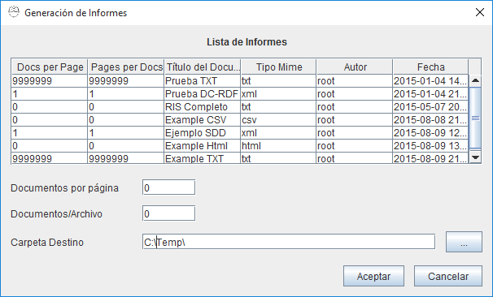

Reports OpenProdoc
1- Introduction
The "Reports" function is developed for showing or exporting metadata from documents and folders in the desired format. The reports cover both functions because depending on the report file is possible to generate an html document formatted for good visibility or documents in CSV or XML format for exporting to other systems.
The operation is as follows:
- A template document whose usual format is text (HTML, XML, CSV, TXT) must be created. "Reports" generated have the same extension / mime type that the document template. That is a template with html extension will generate HTML documents that must meet that standard in their internal structure.
- The document must follow the syntax detailed below. Syntax basically involves combining:
- Literals that will be displayed as introduced,
- Variables representing metadata and will be replaced by the value stored in the metadata.
- and control elements that repeat the elements contained within the boundaries to make nested loops over
- the records/objects in the list
- and, for each object, a loop for all the metadata.
- and, for each metadata, a loop for all the values.
- Templates are not specific to a document or folder type and can be applied to various types. Depending on the use of specific metadata, or the use of a loop for all metadata, the report may be applied to a document type, a type and all its subtypes or is valid for all types of objects (including both folders and documents).
- Once created the template, it must be stored in OpenProdoc, preferably in the "/ System" folder (where already some examples are included) as PD_REPORT document type.
- This document type includes 2 additional metadata, the "number of documents per page" and the "number of pages per file." The reporting function will write the "report header" (content elements between the beginning of the document and the start of the loop of records), then repeat loop region record as many times as "documents per page" are defined, then write the report footer (content elements between the end of the loop of records and the end of the document) and then return to start another "page" with the same procedure. When you have write "number of pages per file", the file will be closed and a new one will be created, and so on until you have write all records from the list. Some examples are included at the end of this page.
- With the template created and stored in OpenProdoc, you can access the functions of reports from several points:
- Folders Menu
- Documents Menu
- Results of Folders Search
- Results of Documents Search
- When requesting reporting, a form with a list of available reports (taking into account the user's permissions, who can access reports according to his permissions (ACL) ) will be presented. The desired report can be selected and can changed (Swing client only) parameters for report generation (records/page and pages/file).
- At each point, the report function will receive a list of items to generate the report (taking into account the user's access permissions on documents). In each case the generated lists are:
- Folders menu: The list contains all folders in the current folder.
- Documents menu: The list contains all the documents in the current folder.
- Search Folders: The list contains all folders retrieved in the search.
- Search Documents: The list contains all the documents retrieved in the query.
- To request the generation, the report will be composed and a reference to the outcome or results will be returned. If multiple files are generated with reports, in Web client a compressed file with all reports you will be returned.

2- Syntax
The syntax of the OPD reports is as follows:
- If the line begins with the character "#" is considered a comment and content of that line is totally ignored.
- Before evaluating the line trailing spaces are removed.
- Si la línea empieza por el carácter “+”, el contenido de esta línea se suma a la línea anterior, tras evaluarse de acuerdo a la regla siguiente quitando el carácter “+”, en otro caso, se vuelva en una nueva línea, tras evaluarse de acuerdo a la regla siguiente.
- Si empieza por “@OPD”, se evalúa la línea como una “palabra reservada” dentro de la lista que se muestra a continuación, en otro caso se considera un literal que se volcará al archivo destino.
- La lista de palabras reservadas es:
- @OPD_DOCSLOOP_S: Inicio de bucle de registros. Todo el contenido entre el inicio y el fin (@OPD_DOCSLOOP_E) del bucle de registros se repetirá para todos los objetos de la lista, sean literales o palabras reservadas. A continuación puede aparecer el carácter “-“ seguido de una lista de nombres de tipos de documentos o carpetas separados por el carácter “,” (Ej. “@OPD_DOCSLOOP_S – DocsIdentidad, Pasaporte”). Los objetos de ese tipo incluidos en la lista se ignorarán y no serán volcados en el informe ni se repetirá el bucle para ellos.
- @OPD_DOCSLOOP_E: Fin de bucle de registros
- @OPD_ATTRLOOP_S: Inicio de bucle de metadatos. Todo el contenido entre el inicio y el fin (@OPD_ATTRLOOP_E) del bucle de metadatos se repetirá para todos los metadatos/atributos de cada documento/carpeta, sean literales o palabras reservadas. A continuación puede aparecer el carácter “-“ seguido de una lista de nombres de metadatos separados por el carácter “,” (Ej. “@OPD_ATTRLOOP_S – PDId, LockedBy, ParentId”). Los metadatos incluidos en la lista se ignorarán y no serán volcados en el informe ni se repetirá el bucle para ellos. A continuación de @OPD_ATTRLOOP_S y antes de “-“ puede incluirse 2 operadores: “*” y “?”. El operador “*”(Ej. “@OPD_ATTRLOOP_S*”) indica que debe recuperarse todos los metadatos del documento o carpeta, no solo los obtenidos en la búsqueda y devueltos en la lista. Esto puede producirse si por ejemplo se busca documentos de un tipo documental Y sus subtipos. En ese caso por defecto solo se devuelven los metadatos del tipo documental padre, de forma que la estructura sea homogénea. El operador “?” indica que NO debe incluirse en el bucle de metadatos los metadatos vacios.
- @OPD_ATTRLOOP_E: Fin de bucle de metadatos
- @OPD_VALLOOP_S: Inicio de bucle de Valores (para atributos multivaluados). Todo el contenido entre el inicio y el fin (@OPD_VALLOOP_E) del bucle de valores se repetirá para todos los valores de un metadato, sean literales o palabras reservadas.
- @OPD_VALLOOP_E: Fin de bucle de Valores (para atributos multivaluados)
- @OPD_GLOBPARENT: Se sustituirá por el camino completo de la carpeta contenedora sobre la que se inició la búsqueda o listado de elementos de una carpeta (ej. “/Expedientes”)
- @OPD_PARENT: Se sustituirá por el camino completo de la carpeta contenedora del documento o carpeta actual dentro de la lista de resultados (ej. “/Expedientes/S-12345/Solicitud”, “/Expedientes/Z-67896/Aprobados”). Esta variable podrá ser diferente en cada elemento si el informe se genera tras una búsqueda (que puede localizar elementos a distintos niveles) y será igual si se muestra los elementos contenidos en una carpeta.
- @OPD_NAME_ATTR: Muestra el nombre interno/técnico de un atributo dentro del bucle de atributos. Puede expresarse como @OPD_NAME_ATTR_* o como @OPD_NAME_ATTR_NombreInternoAtributo (Ej. OPD_NAME_ATTR_TITLE). Puede seguido de “:” y un número entero, que indica la longitud que tendrá el texto. Si el valor es menor, se truncará, en otro caso se completará a espacios. (Ej. @OPD_NAME_ATTR _*:20).
- @OPD_UNAME_ATTR: Muestra el nombre de usuario de un atributo dentro del bucle de atributos. Puede expresarse como @OPD_UNAME_ATTR_* o como @OPD_UNAME_ATTR_NombreInternoAtributo (Ej. OPD_UNAME_ATTR_TITLE). Puede seguido de “:” y un número entero, que indica la longitud que tendrá el texto. Si el valor es menor, se truncará, en otro caso se completará a espacios. (Ej. @OPD_UNAME_ATTR _*:20).
- @OPD_VAL_ATTR: Valor del atributo. Puede expresarse como @OPD_VAL_ATTR_* o como @OPD_VAL_ATTR_NombreInternoAtributo (Ej. @OPD_VAL_ATTR_TITLE). En el primer caso, podrá utilizarse en un bucle para volcar todos los valores, para cualquier tipo de Documento o carpeta. Puede seguido de “:” y un número entero, que indica la longitud que tendrá el texto. Si el valor es menor, se truncará, en otro caso se completará a espacios. (Ej. @OPD_VAL_ATTR_*:20).
- @OPD_REF_ATTR: Valor o referencia del atributo. El comportamiento y sintaxis es igual que en el caso de @OPD_VAL_ATTR, pero si el tipo de variable es tesauro, referencia a un tipo mime o a la carpeta contenedora, en lugar de mostrar el valor de la variable (identificador del término, ej: “12e434_43af43”) mostrará el valor del término referenciado (Ej: “Portugal”).
- @OPD_RECCOUNT: Número de registros volcados en el informe hasta el momento.
- @OPD_PAGCOUNT: Número de páginas volcadas en el informe hasta el momento.
Ejemplos:
Suponiendo dos tipos documentales (simplificados por claridad) con los metadatos (Entre paréntesis el "nombre de usuario" de metadato):
PD_DOCS
- PDId (PDId)
- Title (Título)
- DocDate (Fecha Documento)
Informe (subtipo de PD_DOCS):
- PDId (PDId)
- Title (Título)
- DocDate (Fecha Documento)
- Autor (Nombre Autor)
- Keywords (Palabras Clave)
Y una lista de resultados:
PD_DOCS:
- PDId=1001
- Title="Documento 1"
- DocDate=2015/02/15
PD_DOCS:
- PDId=1002
- Title="Documento 2"
- DocDate=
Informe:
- PDId=1003
- Title="Documento 3"
- DocDate=2001/04/25
- Autor="John Smith"
- Keywords="Economía", "Documentación"
Esta plantilla:
# Ejemplo de Documento. Comentario que no se mostrará
================================================================================
Contenido de carpeta:
+@OPD_GLOBPARENT
# Inicio Bucle documentos
@OPD_DOCSLOOP_S
Doc:
+@OPD_RECCOUNT
--------------------------------------------------------------------------------
Identificador=
+@OPD_REF_ATTR_PDID
@OPD_UNAME_ATTR_TITLE
+=
+@OPD_REF_ATTR_TITLE
@OPD_UNAME_ATTR_DocDate
+=
+@OPD_REF_ATTR_DocDate
--------------------------------------------------------------------------------
# Fin Bucle documentos
@OPD_DOCSLOOP_E
Total Docs=
+@OPD_RECCOUNT
+ Página:
+@OPD_PAGCOUNT
================================================================================
Generará este Informe:
================================================================================
Contenido de carpeta:/Report Test
Doc:1
--------------------------------------------------------------------------------
Identificador=1001
Document_Title=Documento 1
Document_Date=2015-02-15
--------------------------------------------------------------------------------
Doc:2
--------------------------------------------------------------------------------
Identificador=1002
Document_Title=Documento 2
Document_Date=
--------------------------------------------------------------------------------
Doc:3
--------------------------------------------------------------------------------
Identificador=1003
Document_Title=Documento 3
Document_Date=2001-04-25
--------------------------------------------------------------------------------
Total Docs=3 Página:1
================================================================================
Ver: Búsqueda de Carpetas y Búsqueda de Documentos
Help Index OpenProdoc